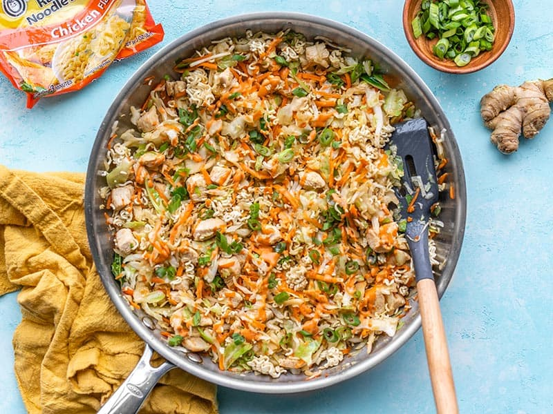

Crunchy Chicken Ramen Stir Fry

Description
A delightful chicken stir fry with ramen noodles. A little sweet, a little spicy, all delicious.
Recipe from Budget Bytes.
Ingredients
Stir Fry Sauce
- 4 tbsp soy sauce
- 2 tbsp toasted sesame oil
- 1 tbsp brown sugar
Sriracha Mayo Drizzle
- 1 tbsp mayonnaise
- 1 tbsp sriracha
Stir Fry
- 2 chicken breasts
- 2 tbsp cooking oil
- 1 14oz bag coleslaw mix
- 2 cloves garlic
- 1 tsp grated fresh ginger
- 3 green onions
- 2 blocks ramen noodles
Steps
- Prepare stir fry sauce by mixing ingredients together in a bowl. Set aside.
- Prepare mayo drizzle by mixing ingredients together in a bowl. Set aside.
- Cube chicken into small bites
- Mince 2 cloves of garlic and grate the ginger and slice the green onions
- Mash and crush the ramen while still in the bag. Open bags and discard seasoning packet.
- Heat skillet to medium-high heat and add cooking oil. Add chicken and saute until cooked through (3-5 minutes). Add garlic and ginger halfway through cooking chicken.
- Add coleslaw mix and continue to saute for 2 minutes, until cabbage just begins to soften. Do not overcook.
- Add stir fry sauce and mix together, continue to saute for 1 minute.
- Turn off heat and stir in crushed ramen.
- Serve in a bowl, add green onions and sriracha mayo drizzle to taste